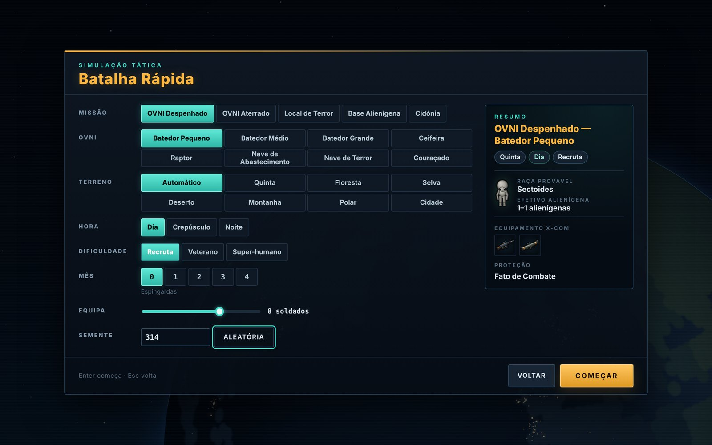

Estratégia em tempo real e combate tático por turnos contra uma invasão alienígena. A engenharia reversa de UFO: Enemy Unknown (1994), reconstruída de raiz para o browser e pensada para o Mac e o iPad.
Em 1999 os OVNIs deixam de ser rumores. Dezassete países (os 16 do original e Portugal) financiam uma força secreta, a X-COM, para descobrir quem são os invasores, de onde vêm e como travá-los.
O jogador comanda essa força de janeiro de 1999 até à missão final em Marte, em duas frentes que se alimentam uma à outra: no Geoscape, o globo em tempo real, deteta e abate OVNIs, gere bases e investiga a tecnologia inimiga; no Battlescape, leva a equipa ao terreno em combates táticos por turnos.
Estudámos as regras do original e a documentação do projeto OpenXcom: fórmulas de precisão, unidades de tempo, fogo de reação, moral, luz e linha de visão, estatísticas de armas e alienígenas, financiamento e calendário das invasões.
Depois reconstruímos tudo em JavaScript, sem dependências, com arte procedimental desenhada pelo próprio jogo e som sintetizado pelo browser. Joga-se como o X-COM de que nos lembramos, com a clareza que hoje esperamos de um jogo.
8
Classes de OVNI
28
Tipos de alienígena
9
Terrenos de combate
78
Armas e objetos
45
Projetos de investigação
80
Artigos na Ufopédia
Fiel ao original
Unidades de Tempo e fogo de reação com as fórmulas de 1994
Desvio real do tiro e armadura por face: frente, lado, trás e baixo
Moral, pânico, feridas fatais e atordoamento
Noite, sinalizadores, fumo, fogo e terreno destrutível
As cinco raças, os oito OVNIs e a árvore de investigação
Financiamento mensal país a país e pactos com os alienígenas
Pensado para hoje
Caminho com o custo em UT antes de andar
Probabilidade de acerto no cursor
Área da explosão e risco para camaradas antes de lançar
Trackpad, teclado e toque no iPad
Campanha pensada para 2 a 4 horas
Tudo em português europeu, com gravação automática
Menu principal · Nova Campanha, Batalha Rápida, Ufopédia, Opções e «Como Jogar»
Dossiê OVNI-19992
OVNI: Inimigo Desconhecido02 · Geoscape
Frente estratégica
O Geoscape: o planeta inteiro num ecrã
Geoscape · 1 abr 1999, 15:00 · Intercetor-1 em perseguição do OVNI-51, três contactos no radar e a noite a cair sobre a Ásia
O globo roda com dois dedos no trackpad e aproxima-se com uma pinça, do planeta inteiro ao nível das cidades. O dia e a noite percorrem o globo hora a hora.
O tempo corre em seis velocidades, de 5 segundos a 1 dia, e para sozinho quando algo exige uma decisão: um OVNI detetado, um local de terror, um projeto concluído, o relatório do mês.
Os radares das bases varrem o céu a cada meia hora. Quando um OVNI aparece, a decisão é do jogador: mandar um Intercetor, esperar que aterre, ou deixá-lo ir.
Um OVNI abatido sobre terra ou perto da costa deixa um local de queda para o Skyranger. Em alto mar, perde-se.
O ciclo da campanha
01Detetar
Radares, Descodificador Hiper-Onda e patrulhas encontram OVNIs, locais de terror e bases alienígenas.
02Intercetar
Stingray, Avalanche, canhões, lasers e plasma contra naves com até 3 000 pontos de casco.
03Recuperar
O Skyranger leva até 10 soldados ao local da queda, da aterragem ou do ataque.
04Investigar
Ligas, Elerium-115, cadáveres e prisioneiros abrem novas armas e respostas.
05Fabricar
Engenheiros produzem armas laser e de plasma, armaduras e naves como o Vingador.
06Prestar contas
No fim do mês, o conselho de 17 países avalia o desempenho e ajusta o financiamento.
Dossiê OVNI-19993
OVNI: Inimigo Desconhecido03 · Interceção
Interceção e missões
Do radar ao local da queda
Interceção · Intercetor-1 contra um Batedor Grande: Stingray e canhão ao alcance, −44 no casco, postura Normal
O duelo
A interceção abre numa janela própria sobre o globo. Escolhe-se a postura (Distância, Cauteloso, Normal, Agressivo ou Desengatar) e liga-se ou desliga-se cada arma.
A régua mostra o alcance de cada arma e o das armas do OVNI, para se saber quem pode disparar sobre quem. Um OVNI muito danificado cai; um destruído não deixa nada para recuperar.
Europa de noite · quatro OVNIs detetados, um local de queda em Espanha e a ficha de um Batedor Grande
As missões
OVNI despenhado e OVNI aterrado
Locais de terror em cidades reais, com civis para salvar
Assalto a bases alienígenas descobertas no globo
Retaliações contra as bases X-COM, resolvidas pelas defesas, pelos intercetores e pela guarnição
Cidónia, em Marte: a missão final
De dia, ao crepúsculo ou de noite, consoante a hora local. Bases perto dos países que financiam detetam mais OVNIs onde mais importa.
Dossiê OVNI-19994
OVNI: Inimigo Desconhecido04 · Bases
Gestão
Bases, cientistas e engenheiros
Base Lusitânia · abril de 1999 · 21 instalações, defesas, quatro hangares e o Vingador pronto
Cada base é uma grelha subterrânea de 6×6 casas. As 13 instalações constroem-se encostadas umas às outras e levam dias a ficar prontas: alojamentos, laboratórios, oficinas, armazéns, contenção alienígena, hangares, radares, defesas de mísseis, laser e plasma e o Descodificador Hiper-Onda.
Oito separadores tratam do resto: investigação, produção, pessoal, armazém, naves, soldados, mercado e contenção. Os cientistas trabalham em 45 projetos de investigação; os engenheiros fabricam 25 produtos, das espingardas laser ao Vingador. Tudo tem custo mensal e capacidade limitada.
Investigação · 50 cientistas, quatro projetos
Produção · horas-engenheiro e prazos
Mercado · entrega e espaço em armazém
Soldados
Recrutas com nome, nacionalidade e atributos próprios, que melhoram a cada missão e sobem de patente. Os que caem ficam no memorial.
Naves
Skyranger, Intercetor, Tempestade de Fogo e Vingador, a única que chega a Marte. Reabastecer, rearmar e reparar levam tempo.
Dossiê OVNI-19995
OVNI: Inimigo Desconhecido05 · Conselho e campanha
Campanha
Um conselho a convencer, um caminho até Marte
Relatório mensal · março de 1999 · Excelente, +567 000 $ de financiamento
No fim de cada mês chega o relatório: pontuação da X-COM e dos alienígenas, contas do mês e financiamento país a país. O desempenho é classificado de Terrível a Excelente.
Países deixados à mercê dos alienígenas podem assinar um pacto e deixar de pagar. Dois meses maus seguidos, dívidas persistentes ou a perda da última base acabam com a X-COM.
O caminho até Marte
01Armas Laser
02Ligas Alienígenas
03Navegação OVNI
04Interrogar um líder
05Origens Alienígenas
06A Solução Marciana
07Cidónia ou Desastre
Um percurso possível na árvore de investigação: a arma certa, a nave certa e um comandante alienígena vivo.
Começar uma campanha
Escolhe-se a dificuldade e depois o local da primeira base, no próprio globo, com o alcance do radar e os países que cobre.
Recruta
Os alienígenas falham mais e o conselho é paciente.
Veterano
A campanha como foi pensada: cada baixa pesa.
Super-humano
Tripulações maiores, mais retaliações, pouca margem.
Nova campanha · primeira base em Lisboa, radar sobre seis países
Dossiê OVNI-19996
OVNI: Inimigo Desconhecido06 · Battlescape
Frente tática
Anatomia de um turno
Quando o Skyranger aterra, o jogo passa para o Battlescape: combate por turnos num mapa isométrico com até três níveis, em que cada soldado tem um orçamento de Unidades de Tempo (UT).
01
Planear o movimento
O caminho aparece com o custo de cada passo: verde se ainda sobra para o tiro reservado, amarelo se gasta a reserva, vermelho se não chega.
02
Apontar
O cursor mostra «Acerto ≈ 40 %», calculado com o modelo real de desvio do tiro, o custo em UT e o que bloqueia a linha de tiro.
03
Lançar
Granadas e sinalizadores seguem um arco limitado pela força do soldado. A área da explosão e os camaradas em risco ficam à vista.
04
Combater de noite
No escuro os soldados veem 9 casas e os alienígenas 20. Os sinalizadores mudam o que cada lado consegue ver.
05
Movimento oculto
No turno alienígena só se vê o que os soldados veem. Quem se expõe leva com o fogo de reação de quem guardou UT.
06
Relatório da missão
Pontuação, alienígenas abatidos e capturados, baixas, material recuperado e a evolução de cada soldado.
Dossiê OVNI-19997
OVNI: Inimigo Desconhecido07 · Ficha técnica
Ficha técnica
As regras do combate, com os números à vista
Custos de ação
Unidades de Tempo
Andar uma casa
4 UT · 6 na diagonal
Rodar 45°
1 UT
Ajoelhar / levantar
4 / 8 UT
Abrir uma porta
4 UT
Recarregar · descarregar
15 · 8 UT
Usar o kit médico
10 UT
Espingarda
Dano 30 · Perfurante
Modo
Precisão
Custo
Tiro rápido
60
25 % das UT
Tiro apontado
110
80 % das UT
Rajada · 3 tiros
35
35 % das UT
A precisão multiplica a Pontaria do soldado; ajoelhado ganha 15 %.
Fogo de reação
UT por gastar ficam prontas para reagir. Quem se mexer à vista de um soldado atento leva um tiro rápido, e os alienígenas fazem o mesmo.
Reações × UT restantes
Luz e visão
Cada unidade vê num cone de 90°. Fogo, sinalizadores e luzes do OVNI mudam o que se vê de noite.
20 casas de dia · 9 no escuro
Moral e pânico
Ferimentos e baixas baixam a moral. Abaixo de 50, o soldado pode fugir ou disparar à toa.
Bravura define a perda
Feridas e atordoamento
Feridas fatais tiram Saúde a cada turno. O atordoamento deixa inconsciente: é assim que se capturam alienígenas vivos.
Seis partes do corpo
Fumo, fogo e destruição
Explosões abrem paredes e deitam pisos abaixo. O fumo tapa a visão; o fogo queima e alastra.
Granada: dano 50, raio 5
Psi
Etéreos e líderes alienígenas provocam pânico à distância ou controlam um soldado durante um turno.
Força Psi decide a resistência
Inventário · custo de cada movimento antes de largar o objeto
Kit médico · feridas por parte do corpo, estimulante e analgésico
Dossiê OVNI-19998
OVNI: Inimigo Desconhecido08 · O inimigo
O inimigo
Cinco raças, oito naves, uma origem por descobrir
Cada raça tem soldados, navegadores, engenheiros, médicos, líderes e comandantes. Capturar as patentes mais altas com vida é o que abre o caminho até Marte.
Primeiro contactoSectoide
Pequenos, frágeis e psíquicos. Os líderes atacam a mente.
VooFlutuante
Pairam sobre o terreno e atacam por cima das coberturas.
TerrorHomem-Serpente
Trazem as Crisálidas, que transformam civis em zombies.
Força brutaMuton
Muita Saúde e armadura, pouca imaginação.
MenteEtéreo
Os mestres psíquicos por trás da invasão.
Unidades de terrorCiberdiscoSectopodeCeifadorCrisálidaZombie
Classes de OVNI
Casco · velocidade
Batedor Pequeno
50
2 200 nós
Batedor Médio
200
2 400 nós
Batedor Grande
250
2 700 nós
Ceifeira
500
4 000 nós
Raptor
500
4 300 nós
Nave de Terror
1 200
4 800 nós
Nave de Abastecimento
2 200
3 200 nós
Couraçado
3 000
5 000 nós
Batedor Médio despenhado · reator de Elerium aceso, de noite
A Ufopédia
80 artigos em 8 secções, desbloqueados à medida que a investigação avança, cada um com ilustração desenhada pelo jogo, ficha gerada a partir das regras reais e texto original no tom dos relatórios de 1999.
Muton · estatísticas por patente e dificuldade
Couraçado · casco 3 000 e o que se recupera
Dossiê OVNI-19999
OVNI: Inimigo Desconhecido09 · Campos de batalha
Campos de batalha
Nove terrenos, gerados a cada missão
Cada mapa é montado a partir de blocos, como no original. O terreno depende do sítio do globo onde o OVNI caiu; os locais de terror acontecem em cidades reais, com civis para salvar.
QuintaSearas, celeiros, cercasUrbanoLocais de terror com civisFlorestaPouca visão, muita coberturaDesertoCampo aberto, longo alcanceSelvaVegetação alta e águaMontanhaRochedos e desníveisPolarGelo e neveBase AlienígenaCorredores de resinaMarteCidónia, a missão final
Missões
OVNI despenhado, OVNI aterrado, local de terror, assalto a uma base alienígena e, no fim, Cidónia. De dia, ao crepúsculo ou de noite, consoante a hora local.
Batalha Rápida
Fora da campanha, qualquer missão pode ser jogada à medida: escolhe-se o OVNI, o terreno, a hora, a dificuldade, o mês do equipamento e o tamanho da equipa.

Batalha Rápida · missão, OVNI, terreno, hora, dificuldade, mês do equipamento e tamanho da equipa
Dossiê OVNI-199910
OVNI: Inimigo Desconhecido10 · Feito para o Mac
Feito para o Mac
Trackpad, teclado e iPad
Trackpad
Battlescape
Clique numa casa
Mostrar o caminho; 2.º clique anda
Ctrl + clique
Rodar para esse lado ou cancelar
⌥ + clique numa porta
Abrir sem entrar
⌘ + clique a apontar
Forçar o disparo
Dois dedos · pinça
Deslocar a câmara · zoom
Teclado
Battlescape
QE
Ação da mão esquerda / direita
Tab · K
Soldado seguinte · ajoelhar
G · L
Granada rápida · sinalizador
R · I
Recarregar · inventário
Enter
Terminar turno
Teclado
Geoscape
1 … 6
Velocidade do tempo
Espaço · P
Pausa / retomar
I · B
Intercetar · bases
U · F
Ufopédia · financiamento
S · C
Gravar · centrar
iPad
Toque
Toque
1.º mostra o caminho, 2.º confirma
Toque longo
Rodar ou cancelar
Dois dedos
Deslocar e zoom
Ecrã principal
Abre em ecrã inteiro, como app
Acessibilidade
Ninguém fica de fora
Quatro ajustes em Opções › Acessibilidade valem para todo o jogo, do Geoscape ao combate. Foram afinados com um jogador que só usa o teclado, tem daltonismo e joga com o browser a 125 %.
As cores nunca são a única pista: aliados e inimigos distinguem-se também pela forma.
Opções › Acessibilidade
Quatro ajustes
Cores
Paleta para daltonismo: azul, laranja e magenta em vez de vermelho, verde e amarelo
Cursor de teclado
Uma casa marcada que as setas movem: andar, apontar e lançar sem rato
Reduzir movimento
Segue o sistema ou tira animações, tremores e rotações automáticas
Tamanho do texto
100, 115 ou 130 % nos menus e no painel de combate
Requisitos
Sem instalação
Mac
Safari ou Chrome; trackpad ou rato e teclado
iPad
Safari, em ecrã inteiro a partir de «Adicionar ao ecrã principal»
Outros
Qualquer browser moderno em Windows ou Linux
Gravações
Sete espaços no browser (automáticos, antes da missão, por turno e três manuais), com exportação para ficheiro
Dossiê OVNI-199911
OVNI: Inimigo Desconhecido11 · Jogar e estado do projeto
Jogar
Do Terminal à primeira missão em dois minutos
Abrir o Terminal e correr os comandos ao lado.
No Safari ou no Chrome, abrir localhost:8001.
Escolher OVNI: Inimigo Desconhecido na página «Jogos de Família».
Nova Campanha para a guerra completa, ou Batalha Rápida para uma missão avulsa.
# uma vez
git clone https://github.com/
ricardomoey/helloworld.git HelloWorld
cd HelloWorld
git switch main
# sempre que quiser jogar
python3 -m http.server 8001
Ou duplo clique em ovni-1999/serve.command.
Estado do projeto
Campanha completa, polimento contínuo
Onda 1Regras, mundo e arte
Dados do original, mapa-mundo, 76 blocos de mapa, sprites procedimentais e mais de 50 sons sintetizados.
Onda 2Motor de combate
Caminhos, linha de visão, luz, tiro com desvio, explosões, moral, IA alienígena e renderizador isométrico.
Onda 3Batalha jogável
HUD, inventário, kit médico, menus, briefing e relatório, testados com batalhas completas pela interface.